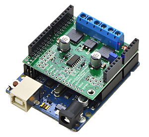
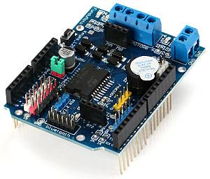

Motor boards¶
CommandStation-EX is compatible with a wide variety of motor boards, also known as “dual H-bridges” and “motor shields”. We’ve sorted them from least difficult to most difficult to use to help you decide what to use.
TL;DR (aka short version): We currently recommend the Arduino Motor Shield R3 or a supported clone board like the Deek-Robot. See the Shopping List

Note
Where appropriate, we have used the terms “single” and “dual” to indicate on the non-shield type boards, which ones have just a single H-Bridge for one track and which ones have two. A single H-Bridge board will power your main track, but you will then need another board of some kind to connect to your programming track
Boards currently supported¶
Easy to use boards
Arduino Motor Shield - 2A [RECOMMENDED]
Pololu MC33926 - 3A - current sensing is not appropriate for most programming
Intermediate boards (Tinkerer Level) - require wiring
Hard to Use Boards (Tinkerer or Engineer Level) - these boards require you to add your own config to the config.h file, and may not have good current sensing. That said, if you buy a separate current sense board, we particularly like the IBT_2 board (though you will need 2 of them or some other board for the programming track)
BTS7960 IBT_2 Board (single) - 43A - may be too powerful
Non-compatible boards
VNH2SP30 - Sparkfun Monster Moto and others. It can’t switch fast enough to generate a reliable DCC signal
IFX9202ED - Infineon Dual H-Bridge. Can’t switch fast enough.
Other boards, while not fully supported and tested, can be used. Look for the following criteria:
We recommend a dual h-bridge board or two discrete h-bridge boards. They can be different sizes, one bigger for main track and one smaller for programming track operations.
It must handle enough current for the layout. 2 amps will drive 3-5 HO scale locomotives.
It must have working and accurate current sensing (many do not)
It must be able to switch at least 10000 times per second (some do not)
Look for an Arduino shield form factor to eliminate wiring (not required but preferred)
Arduino Motor Shield¶
Conductor level
Easy to use, widely available and can support 2A load per channel.

Deek-Robot Motor Shield¶
Conductor Level
Electrically identical in most every regard to the Arduino motor shield. Often cheaper. Supports 2A per channel

DIY More L298NH Motor Shield¶
Conductor Level
Another similar board to the Arduino motor shield. Supports 2A per channel.

L298N Motor Driver (dual)¶
Tinkerer level
This is an alternative to the Arduino and Deek-Robot shields. It uses the same L298 chip as the Arduino motor shield, only in a different form factor and with better cooling. You’ll need to connect jumper wires from the correct pins on the Arduino to this board. IMPORTANT: You will also need to snip two long chip pins and add 2 resistors to enable current sense to have overload protection and be able to acknowledge CV reads and writes. As with any of these boards with current sense issues, you can also add a small current sense board like the MAX471.

Pololu MC33926¶
Tinkerer Level
Comes soldered or in a kit where you just have to solder the headers and connector. While we have a motor board type for this board, the current sense is not acceptable. We recommend using an external current sense board like the MAX471. Many people still use this board.
{kind=link}
BTS7960 IBT_2 Board (single)¶
Warning
This board can supply a LOT of current. The maximum reccommended current is 5A for N scale, 10A for HO and above. This board can supply a whopping 43A, enough to cause a LOT of damage. To use this board, make sure you have a fuse or circuit breaker connected in line with both rails. SOFTWARE ALONE CANNOT PROTECT YOU IN ALL CASES.
Engineer level
You will either need 2 of these or one of these and another board to run your programming track. These boards can provide high current. Indeed, we have built boosters using these boards. If the 2 Amps (really 1.5A) of the L298 boards aren’t enough for your track, this is one of the best options.

Keyes/Fundumoto (“Beeper Board”)¶
Engineer Level
You have to lift two traces and solder 2 resistors and use 2 jumpers to the current sense pins. This board is immediately recognizable because it has a cylindrical beeper or buzzer on the board.
{kind=link}
Velleman KA03 (kit) VMA03 (soldered)¶
Engineer Level
Must cut traces and solder resistors to get current sensing on the soldered board. Much easier to simply not solder the pins on the kit version. Pin assignments must be added to a new motorboard entry in the config.h file.

Click here for a complete Parts Shopping List
Click here for Motor Board Install Instructions